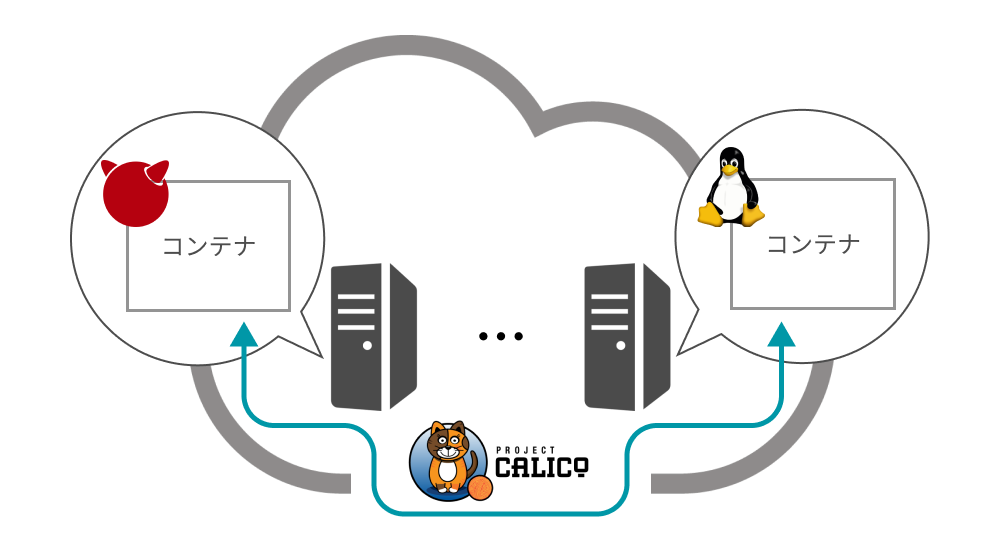
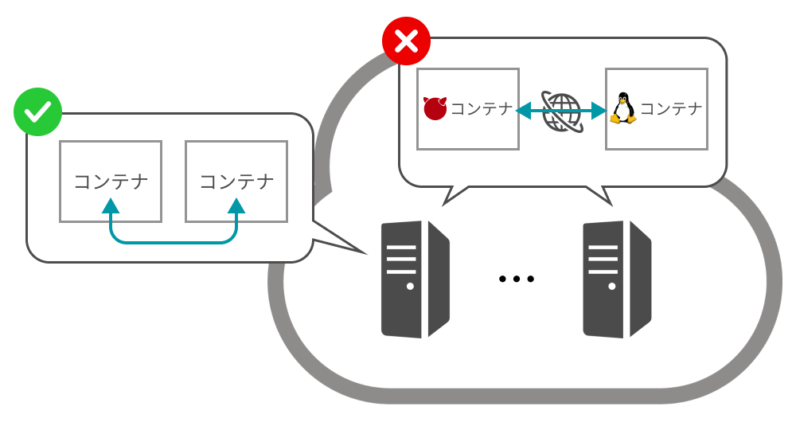
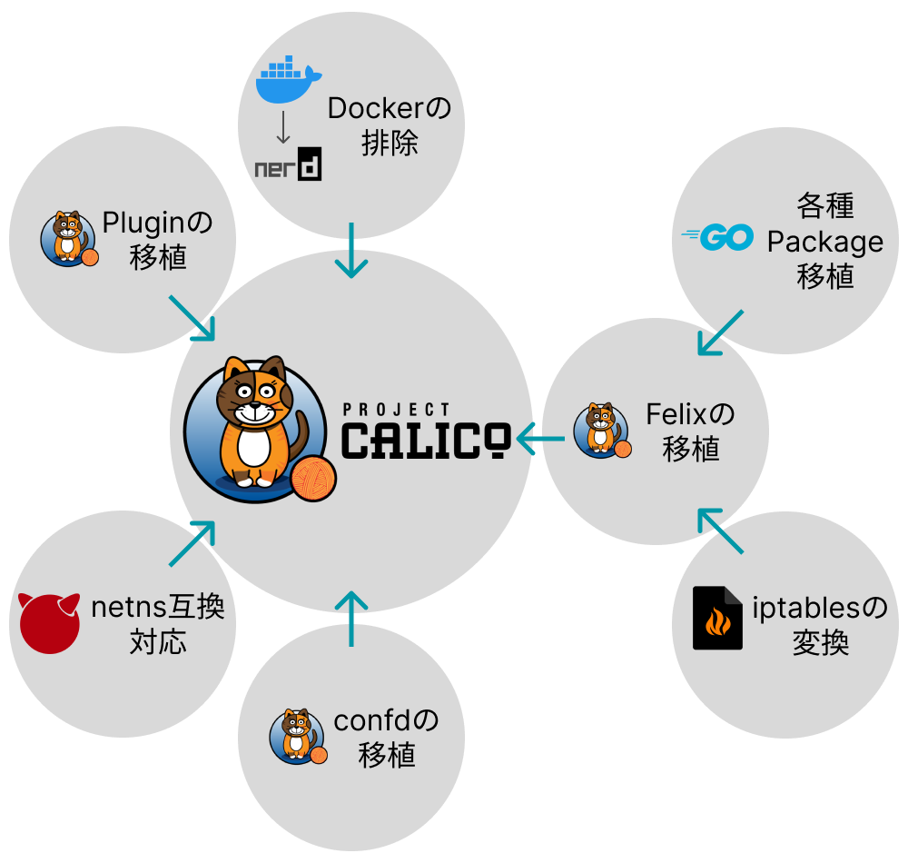

キーワード： Calico / FreeBSD / netlink
異種OS機能連携のためのセキュアコンテナネットワーキング機構の実現を達成するために、複数ノードをまたいだコンテナ間通信を実現する必要がある。これは異種OS機能連携によるセキュアコンテナをクラウドコンピューティング基盤上で利用するための重要な一歩である。本実装では、FreeBSDにCNIプラグインのひとつであるCalicoを移植することで、Linuxと同等の複数ノード上コンテナ間通信が可能となると考えた。現在は、Calico移植のためのGoプラグインの移植などを行っている。
背景
-
異種OS機能連携によるセキュアコンテナのクラウドコンピューティング基盤上での利用を想定
- マイクロサービスアーキテクチャのような、コンテナが相互通信するシステム構成への対応
- Linuxと同等の複数ノードをまたぐコンテナ間通信の実現が必要不可欠
課題

-
Network Namespace互換機能の実現では、単一ノード上のコンテナ間通信を実現したが...
- vnetとjailの入れ子構造を利用したNetwork Nameespace互換機能
- CNIコアプラグインの利用
-
現状では、複数ノードをまたいだコンテナ間通信が実現不可能
- Linuxでは、CalicoというCNIプラグインで実現
- Calicoに必要となる機能モジュールもFreeBSD対応していないことがほとんど
実装

Calico Pluginの移植
高レベルコンテナランタイムやコンテナオーケストレーターから実行するバイナリとなるCNIプラグインの移植が必要となる。仮想インタフェースの作成やNetwork Namespace互換への接続を行うcalicoバイナリと、IPアドレスの割当を行うcalico-ipamバイナリそれぞれを移植する。実装では、LinuxとFreeBSDのネットワークスタックの差異を吸収する工夫が必要となる。
Felixの移植
Calicoの機能の中枢をになるFelixの移植が必要となる。Felixはiptablesの制御を担うが、FreeBSDではiptablesが存在しないため、iptablesと同等の機能を持つpfというファイアウォールを利用する。そのためiptablesのルールをpfのルールに変換する機構を実装する。
また、Felixは、NetlinkやNetwork Namespaceの操作をGo言語から行うことから、netlink packageやnetns packeageのFreeBSD移植が必要となる。これらはLinuxの機能に依存している箇所もあるため、FreeBSD用のパッケージを再実装しなければならない。現在はnetlink packageの機能を絞った再実装と、netns packageをvnetの操作に変換したvnet packageの実装を行っている。同時に、UnixパッケージやSyscallパッケージなどのGoパッケージに足りない部分もFreeBSD対応していく。
Calico-BIRDの移植
BIRDはBGPの通信を行うために用いられ、FreeBSDでも利用可能である。しかしCalico用に一部改変したBIRDであるCalico-BIRDはFreeBSDでは利用できない。そこで、FreeBSDで利用できるBIRDを参考に、Calico-BIRDの移植を行った。すでにFreeBSDでの動作を確認できているため、他の機能コンポーネントが完成次第、全体の動作を確認する。
Dockerの排除
Calicoの機能コンポーネントをまとめたCalico-nodeを実行するためには、Dockerを利用する必要がある。しかしFreeBSDでは、Dockerの利用が難しいため、正常に動作する、かつDocker互換であるnerdctlを用いるように改変を行った。すでにFreeBSDでの動作を確認できているため、他の機能コンポーネントが完成次第、全体の動作を確認する。
Network Namespace互換機能への対応
Network Namespace互換機能の実現で実現した、Network Namespace互換を利用するような実装を行う。これは、Calico PluginやFelixなどの機能コンポーネントの実装に影響してくるため、vnet packageを利用することを想定している。
頑張った点
- やるべきことの列挙をしたことで全容を確認し、計画をたてることができた
- 過去に実装したNetwork Namespace互換を再利用する形で実装できた
- CalicoのFreeBSD対応やFreeBSDで利用可能なパッケージの作成など、多方へのオープンソースの貢献ができる
今後の課題
-
実装できていない部分の実装
- Calico Pluginの移植
- Felixの移植
- オープンソースへのコミット
- 評価
URL
Calico (Github)：https://github.com/SoumaSakaguchi/souma-calico-public
BIRD (Github)：https://github.com/SoumaSakaguchi/souma-calico-bird-public
netlink (Github)：https://github.com/SoumaSakaguchi/netlink-public
vnet (Github)：https://github.com/oss-fun/vnet